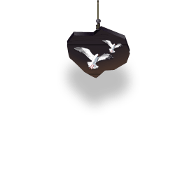

-
-
parallax.js
-
-

parallax.js
WOW, that's deep man! parallax.js reacts to the orientation of your smart device, offsetting layers depending on their depth within a scene... Oh, you don't have a smart device? No worries, if no gyroscope or motion detection hardware is available, parallax.js uses the position of your cursor instead. Radical.
This project is a collaboration between
Matthew Wagerfield & Claudio Guglieri.

Tilting is fun!
For the best experience, check out this site on a mobile or tablet equipped with a gyroscope
(iPads are the coolest)